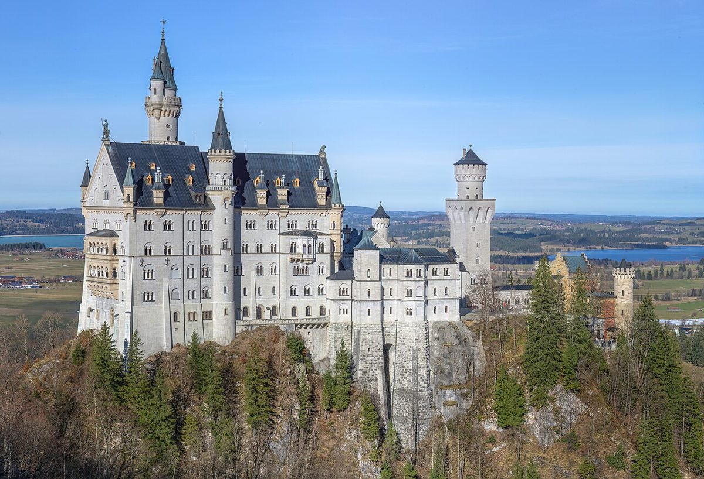

探秘德国新天鹅堡：童话城堡的梦幻之旅

位于德国巴伐利亚州的新天鹅堡，是世界上最著名的童话城堡之一。它不仅是迪士尼乐园睡美人城堡的原型，也是无数游客梦寐以求的旅行目的地。如果你计划前往这座梦幻般的城堡，以下信息将帮助你规划一次完美的旅程。
如何到达新天鹅堡
新天鹅堡位于德国南部，靠近菲森小镇。从慕尼黑出发，你可以乘坐火车前往菲森，然后再转乘公交或出租车到达城堡。全程大约需要2-3小时。如果你喜欢自驾游，从慕尼黑开车前往也是一个不错的选择，路程约2小时。
最佳旅行时间
新天鹅堡四季皆有不同的美景，但春秋季节是最适合游览的时间。春天时，城堡周围的山谷中鲜花盛开，景色如画；秋天时，红叶点缀的景色更是令人陶醉。夏季是旅游旺季，游客较多，建议提前预订门票。冬季虽然寒冷，但雪后的城堡宛如童话世界，别有一番韵味。
不容错过的亮点
1. 城堡内部参观：新天鹅堡的内部装饰充满了浪漫主义风格，尤其是国王的起居室和大厅，奢华而梦幻。
2. 玛丽安桥：这座桥是拍摄新天鹅堡全景的最佳地点，尤其是清晨或傍晚时分，光线柔和，景色壮丽。
3. 阿尔卑斯湖：位于城堡附近的阿尔卑斯湖是徒步旅行的好去处，湖光山色相映成趣，非常适合拍照。
当地美食推荐
游览新天鹅堡后，别忘了品尝当地的巴伐利亚美食。菲森小镇有许多传统餐厅，推荐尝试德国香肠、椒盐卷饼和巴伐利亚啤酒。如果你喜欢甜点，不妨品尝一下当地的苹果派或黑森林蛋糕。
实用小贴士
1. 建议提前在官方网站预订门票，以避免排队。
2. 参观城堡时穿着舒适的鞋子，因为城堡内部和周边有许多楼梯和陡峭的小路。
3. 如果你时间充裕，可以顺便游览附近的林德霍夫宫和霍亨施旺高城堡，它们同样是巴伐利亚的著名景点。
新天鹅堡不仅是一座建筑杰作，更是一个承载着梦想和浪漫的地方。无论你是历史爱好者、摄影发烧友，还是童话故事的忠实粉丝，这里都能为你带来难忘的体验。准备好你的相机，踏上这场童话般的旅程吧！
Haiktec
- 智能餐厅与咖啡馆成功指南：7个简单策略吸引更多顾客
- Schwarzwald Reisebudget-Tracker & Planer für internationale Gäste
- 智能探索德国萨尔兰与摩泽尔：7步指南轻松发现隐藏的自然与文化瑰宝
Text mit KI erstellt und automatisch geprueft.